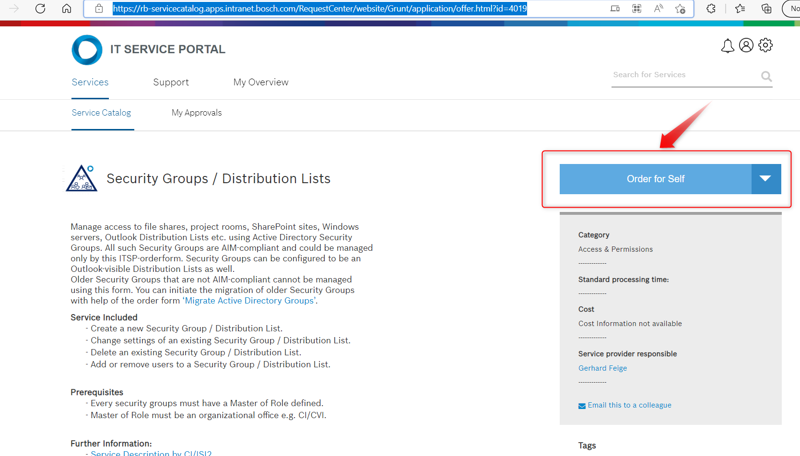
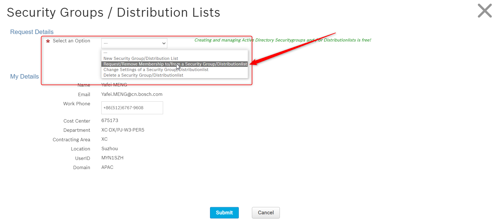
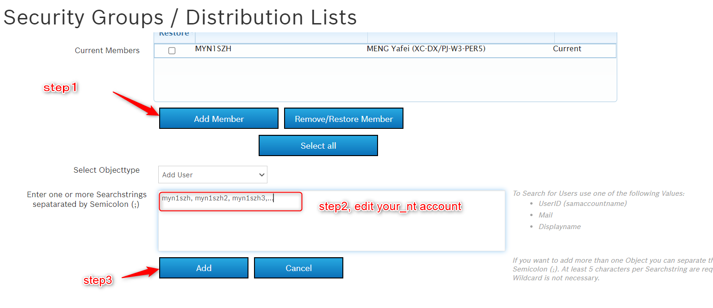

How to manage your source code in bitbucket
Introduction
Introduce how to manage the source code related to the Wave3 algorithm parts on the Bosch BitBucket.
Algorithm warehouse address: PJW3_ALG
Workflow
STEP 1 Apply for access writing permissions


rb_ci_soco_PJW3_ALG_developerwrite_uf
